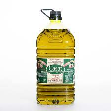

La palabra aceite (del árabe hispánico azzáyt, este del árabe clásico azzayt, y este del arameo zaytā1) es un término genérico para designar numerosos líquidos grasos de orígenes diversos que no se disuelven en el agua y que tienen menor densidad que esta. Es sinónimo de óleo (del latín oleum), pero este término actualmente se emplea solamente para los sacramentos de la Iglesia católica y en el arte de la pintura. Originalmente la palabra aceite se refería únicamente al aceite de oliva, y óleo se utilizaba para los demás, pero la palabra se generalizó para denominar a aceites vegetales, animales o minerales sustituyendo a óleo en la mayoría de sus acepciones. La mayoría de moléculas que componen los aceites son lípidos. Principalmente triglicéridos (también llamados triacilgliceroles), que son el resultado de la combinación de los tres grupos alcohólicos del glicerol (glicerina) con tres ácidos grasos iguales o distintos
